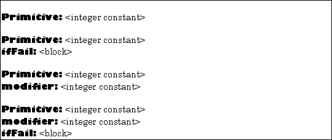

Chapter 5: Design of an Object-Oriented Language
This chapter presents the design specifications for a next generation object-oriented programming language, which builds on the Smalltalk ideas, and more precisely meets the needs of a database programming environment.
The principal design objective is simplicity. The remaining objectives flow from this one. A simple system will be as small as possible, will require fewer system resources, and will be easier to learn and to understand.
We require that the system be small enough that one person can understand all of it. This corresponds to one of the design principles for Smalltalk: "If a system is to serve the creative spirit, it must be entirely comprehensible to a single individual" (Ingalls, 1981).
Other design principles can be expressed by the maxims: everything is an object, and every object has a class. This means that objects can be treated uniformly, and every object is self-describing; that is, given an object, the run-time system can tell by looking at its bits what kind of object it is (ie. what its class is).
The first two sections describe the design of the run-time system, from the perspectives of data and process. The third section presents the design of a high level language which can be executed by the run-time virtual machine. The final section outlines the design of a programming environment built upon the high level language.
5.1 Memory Model
This section describes objects as they appear in memory, outlining their structure and interconnections. Every object must have a unique identifier which enables the run-time system to locate it. Besides a memory address, which is volatile, each object has an identifier called its external object pointer, or EOP. The address space defined by a 32 bit word is not completely consumed by memory addresses and EOP's. Following a suggestion of Almes, Borning & Messinger (1983) we encode intrinsic objects into the unused portion of the address space.
5.1.1 Intrinsic Objects
The design includes several kinds of intrinsic objects, which are really values (MacLennan, 1982) encoded into the 32 bits of an object identifier. Each intrinsic object is an instance of a particular class which can be determined by examining its bits.
The classes whose instances are intrinsic objects are called intrinsic classes. In our design, they are:
SmallInteger, whose instances are integers in the range [-230, 230-1].
Coordinate, whose instances have two components which are each in the range [-214, 214-1].
Selector, whose instances are used to name methods.
Character, whose instances are characters in the ASCII character set.
Block, whose instances are blocks of code associated with a method context or stack frame.
Boolean, whose instances are the constantstrueandfalse.
Undefined, whose instance is the constantnil.
EmptyString, whose instance is the constant''.
EmptyList, whose instance is the constant#().
5.1.2 Other Objects
5.1.2.1 Object components
All other objects are implemented by structures in memory consisting of three parts: an object header, instance variables, and an array part.
(1) The object header
The object header defines the object by specifying the class of which it is an instance, the number of instance variables which it contains, the type of its array part, and its overall size. Since classes are regular objects, and every object has (is an instance of) a class, the object header contains a reference to (the object identifier of) the object's class.
(2) Instance variables
An object can have zero or more instance variables. Each instance variable contains an object identifier, that is, either an intrinsic object or a reference to another object. This means that each instance variable is a uniform size, and identifies a single object.
(3) Array part
An object can have an array part, making it a variable length object (Goldberg & Robson, 1983). An array part can be either an array of (references to) other objects, or an array of bytes. Arrays of bytes can have bytes which are interpreted either as unsigned integers in the range [0, 255], or as characters in the ASCII character set.
5.1.2.2 Essential system objects
There are some objects which must be present in the system in order for the virtual machine to run. These are: built-in data types, classes, and methods.
(1) Built-in data types
Only a finite number of data values can be represented as intrinsic objects. By contrast, the number of data values that an application program may need to deal with is unbounded. The run-time system needs some objects to hold simple data values which surpass the capacities of the intrinsic classes defined earlier.
Numbers are a prime example. The virtual machine provides operations on the instances of SmallInteger, but (viewed as a set of values) SmallInteger is not closed under these operations. Our design currently calls for a class of objects named LargeInteger each of whose instances can hold an integer with hundreds of digits. Another class of objects called Fraction has instances which are (approximations to) rational numbers (Matula & Kornerup, 1985).
Strings of characters are required in order to name things, and to allow communication with people. The class named String has instances which hold strings of characters in their array part.
The system also provides the class List, whose instances contain an ordered list of other items, and a class Global, whose instances serve as global variables. A list has no instance variables, but does have an array part of object references. A global has two instance variables, one a string containing the name of the global variable, and the other (a reference to) its value.
(2) Classes
A class object is needed for each kind of object, including intrinsic objects. A class serves to describe the structure and the behavior of its instances.
An object's structural description consists of the number of its instance variables, and the type of its array part. This information can be represented with positive integers. Our design limits the number of instance variables in an object to the range [0, 251], and there are four kinds of array parts, so this information is encoded into a single SmallInteger which occupies one instance variable in each class.
The behavior of an object is specified by a collection of methods. The array part of each class is a list of references to methods which are applicable to its instances.
(3) Methods
A method is an object which contains a program which can be directly executed by the virtual machine component of the run-time system.
Its array part is a list of byte codes. It also contains references to the class for which it is defined, the selector which is its name, and a list of additional objects referred to by the byte codes. These additional objects may be intrinsics, including selectors of messages which this method may send, as well as literal objects, such as strings and lists of literal objects, and global variables used by the method.
5.1.3 Object interconnections
Together, the objects in the system form a connected directed graph (Knuth, 1973). Each object is a vertex in the graph. Each object identifier contained in an object (in the object header, in an instance variable, or in the array part) is an arc of the graph.
Intrinsic objects have an out-degree of zero. Each intrinsic object is unique and constant, but may appear in many different objects. Conceptually, an instance variable can contain a reference to an intrinsic object. In the implementation, the run-time system can determine which intrinsic object it is by examining the bits of the object reference. Other objects have an out-degree of at least one (since every object contains a reference to its class).
There are two subgraphs of particular interest: the instance hierarchy and the inheritance hierarchy, which together form a sort of backbone to which clusters of objects (strongly connected subgraphs) adhere.
 |
| Figure 5.1 Instance Hierarchy |
5.1.3.1 The instance hierarchy
The instance hierarchy (see Figure 5.1) is the subgraph obtained by including only the arcs which correspond to the reference from each object header to the class of which the object is an instance. This arc can be read "is an instance of". Since every object has a class, every object participates in this hierarchy. Except for its leaves, every object in the hierarchy is a class, ie. an object which can have instances. The subgraph is rooted in the class named Class. At this point it becomes necessary to avoid an infinite regress (Hofstadter, 1979), for since every thing is an object, Class is an object, and since every object has a class, Class must also have a class. We introduce a cycle, by making Class an instance of itself. This class is a self-describing object.
In our design, references in the instance hierarchy allow for paths from the leaves towards the root only. In other terms, if a class is thought of as representing a set of objects, the intension of that set is defined by the class, but its extension (Bertino & Martino, 1991) is not explicitly represented.
 |
| Figure 5.2 Inheritance Hierarchy |
5.1.3.2 The inheritance hierarchy
A smaller hierarchy, the inheritance hierarchy, involves only classes as vertices, together with the arcs which correspond to the instance variable in each class which identifies the class from which it inherits structure and behavior (called its superclass). This arc can be read "inherits from". Because our design does not include multiple inheritance, each class has at most one superclass. This subgraph is rooted in the class named Object. Like the vertex labelled "B" in Figure 5.2, Object has no superclass.
Nothing in the design would prevent a user of the system from defining another inheritance hierarchy, disjoint from the one rooted in Object. The root of such a hierarchy would be an instance of Class but would have no superclass.
| Figure 5.3 A class and methods |
5.1.3.3 Classes and methods
Each class has an array part which refers to the methods defined in the class. Each method contains a reference to the class for which it was compiled. Together, a class object and its methods form a strongly connected component of the graph.
The subgraph obtained by including the arcs corresponding to references from classes to their methods, from each method to its auxiliary list, and from these lists to the objects of the lists forms a directed acyclic graph. The subgraph would be a forest of trees, with each tree rooted in a class, except that global variable objects are shared among the methods.
5.2 Execution System
The execution system implements a virtual machine and consists of a byte code interpreter, a set of primitive routines, and a memory management system. It is written to run on a specific host system.
5.2.1 The byte code interpreter
The byte code set is the instruction set of the virtual machine. The machine is stack based, and most of the byte codes operate on the stack in some way. Byte codes perform elementary operations, and implement message sends. A message send consists of three phases: preparation, method lookup, and method execution.
5.2.1.1 Byte code execution
The byte code set provides elementary operations on intrinsic objects, access to information stored in the object header (size, class, etc.), access to instance variables and array parts, and the creation of new objects. There are byte codes to push various constants and object references onto the stack, byte codes to perform operations on one or more items from the top of the stack and replace them with a result, and byte codes to store the object on the top of the stack into a variable.
The byte code interpreter implements a virtual machine by executing a simple fetch-execute cycle. It maintains a program counter, which is the position of the next byte code to fetch from the current method. During each cycle, it fetches the next byte code, interprets and executes it, and updates the program counter.
Most of the byte codes perform a simple operation, entirely specified by the virtual machine, which removes a certain number of arguments from the stack and replaces them with a result. The byte codes which implement message sends are more complex, and provide the equivalent of subroutine calls. Interpretation of the current method is suspended, another method becomes the focus of execution, and will eventually return a result. The overall effect of a message send byte code, however is similar to that of any other byte code: a certain number of objects are removed from the stack and replaced with a single object which is the result of the operation.
5.2.1.2 Message send preparation
Before a message send can occur, the byte codes preceding it must have directed the virtual machine to push the receiver of the message and an appropriate number of arguments onto the stack.
5.2.1.3 Method lookup
A message send byte code provides the interpreter with the instance of Selector which names the message, and an indication of the number of arguments. The number of arguments allows the interpreter to identify the receiver of the message, located at a certain depth from the top of the stack. The receiver object carries within it an indication of the Class of which it is an instance.
Method lookup, the process, is an implementation of the mapping from the cross-product of the set of instances of Class and the set of instances of Selector to the set of instances of Method. This mapping is a partial function.
The design of the method lookup process calls for each Class to maintain a partial function from Selector to Method. If the class of the receiver object maps the selector of the message send to a method, then that is the method to be executed. Otherwise, the method lookup process continues with the superclass of the receiver object's class.
This process continues until either a matching method is found, or no method has been found for the selector in the ultimate superclass, the class named Object.
A failure of the method lookup process results in a run-time exception. Our design calls for the virtual machine to signal this exception by grouping the arguments into a single List object and sending the message #noMethodFor:withArgs: to the receiver with two arguments: the selector which failed to map to a method, and the list of arguments associated with that message send. The design requires the class named Object to implement a method named #noMethodFor:withArgs: to avoid an infinite loop in the interpreter.
For performance reasons, the design requires that the interpreter maintain a look-aside table of elements of the cross product of Class, Selector, and Method corresponding to recently observed message sends. The method lookup process described above is performed only when the look-aside table fails to yield a method. Furthermore, whenever the method lookup process is performed, the look-aside table is updated to include the new element.
5.2.1.4 Method execution
Method execution is something like a subroutine call. The virtual machine creates a stack frame to hold the state of the execution of the method which requires the message send. The stack frame includes the receiver and arguments for the new method, and space for temporary (local) variables.
Once the stack frame has been constructed, the interpreter commences execution of the new method by fetching and interpreting its first byte code. Execution continues in this manner, and may involve further message sends. Eventually, a return byte code will be executed.
A return from method execution is performed by removing the stack frame, including the receiver and arguments, and pushing the object specified by the return byte code onto the stack. Execution of the method which sent the message then resumes. The interpreter fetches the byte code following the one which initiated the message send and interprets it, and so on.
The byte code set also includes an instruction to directly execute a method which is on the top of the stack. This by-passes the method lookup phase, which is not needed since the method is readily available. This allows the use of methods which do not necessarily have a name, and which are not necessarily affiliated with a particular class. We call such methods "anonymous methods" (Conrad, 1990).
5.2.2 Primitive routines
Byte codes are limited in number: the operation code portion of a virtual machine instruction is constrained by our design to be one byte, limiting the number of distinct byte codes to 256. Primitive routines are an extension to the byte code set, which removes the limitation.
When a method specifies that its implementation is primitive, it provides the virtual machine with a primitive number (in the range [1, 255]), and a primitive modifier (in the range [0, 127]). Thus, the virtual machine could provide over thirty-two thousand primitive operations.
Primitive operations fall into three major categories: those which enable a higher level language, those which execute more efficiently than could a method in the higher level language (because of the interpretation), and those which interact with the operating system of the machine executing the interpreter.
5.2.3 Input/Output
The virtual machine sends the message #interrupt: to whatever object happens to be on top of the stack when it recognizes an input event, such as a keystroke or a mouse movement, passing a code for the event as the argument.
A primitive is defined to write a single character to the output device. Related primitives allow the current position on the output device to be determined and changed.
Another set of primitives deals with access to the host file system, including routines to navigate directory systems, open and close files, read and write files, etc.
5.2.4 Memory management
To participate in a computation performed by the virtual machine, an object must reside in memory. The initial set of objects making up the system must be produced in a special way, through a boot-strapping process. Thereafter, new objects can come into being only when a class is required to make a new instance of itself.
An object must cease to be part of the system as soon as no other objects in the system refer to it. There is no explicit instruction to an object to cease existence. This means that it will be impossible for the system to suffer from dangling pointers and memory leaks.
The memory management design draws on ideas from the realms of virtual memory management and garbage collection. The initial objects of the system reside in a file in the host system's secondary storage. Whenever an object is needed in memory, the virtual machine experiences an "object fault" (Mariani, 1991) (by analogy to a page fault in a paging virtual memory system). The interpreter will call upon the memory management portion of the run-time system to bring the object from secondary storage into memory, as suggested by Mariani (1991). When this is accomplished, the interpreter will continue its work.
As a part of the execution of the primitive operations which create new objects, the interpreter will call upon the memory management portion of the run-time system to allocate memory for the new object. There are also primitive operations which may increase the size of an existing object.
Whenever the memory management portion of the run-time system allocates memory, whether for a new object, a growing object, or as part of satisfying an object fault, it must perform a garbage collection activity. This is because there may not be enough memory left to perform the required allocation. The design of the garbage collection portion of memory management is beyond the scope of this thesis. However, our design requires that it have certain properties: it must be unobtrusive (causing no noticeable pause in operations of an application program), and it must interact with the virtual memory portion of memory management. In particular, when garbage collection does not yield enough memory, the virtual memory system must choose certain objects and spill them to secondary storage. When such objects are required again, they will be returned to memory by the usual object fault mechanism.
Whenever a new instance is created, and its class defines a method named #initialize, the run-time system automatically sends the message #initialize to the object immediately after its creation. This allows the object to assign appropriate objects to its instance variables so that it has a consistent initial state. The concern that new objects contain reasonable objects (ie. other than nil) in their instance variables led the designers of Smalltalk to introduce a complex metaclass structure (Goldberg & Robson, 1983). We have adopted a different solution to the problem, which enables us to revert to the simpler metaclass structure (with Class as the sole metaclass).
5.3 The High-level Language
The next higher level language for a hardware machine is normally an assembly language. We have chosen not to provide such a language, but rather to design a general purpose problem-oriented language which will be compiled to byte code instructions. We have called this high level language TOOL (a recursive acronym for TOOL Object-Oriented Language).
A method written in TOOL is simply a string of characters drawn from the set of all printable ASCII characters together with space, tab, carriage return, line feed, and form feed.
At the lexical level, a TOOL method is a stream of lexemes (substrings made up of adjacent characters, according to the lexical rules of the language). The lexemes of TOOL are described in the next subsection. At the syntactic level, lexemes are grouped together to make syntactic items, described by the syntax of the language. At this level of description, a syntactically correct TOOL method is a single syntactic item, which obeys the rules for being a "Method".
In the description, lexical items are named using all lower-case strings, while syntactic item names are capitalized. When an item name is used in the text, it will appear in quotation marks, as did "Method" in the previous paragraph.
5.3.1 TOOL lexemes
| Figure 5.4 TOOL Lexical Diagrams (Part 1 of 2) |
The TOOL lexemes are shown in Figure 5.4 and Figure 5.5. The lexical item "comment", unlike all of the others, is explicitly not a lexeme participating in the syntax of a method, but is a kind of white space. It consists of any string of characters, except a double quote, within double quotes. A "comment" may contain two adjacent double quotes, but may not contain a nested "comment". Besides comments, white space includes spaces, tabs, new lines, carriage returns, and form feeds. White space can be freely used to improve readability by controlling the layout of the method text, subject to the rule that a lexeme (other than "comment" and "literal string") may not contain embedded white space.
The lexical items shown in Figure 5.4 define some basic entities used in method definitions and message sends. An "identifier" is a letter followed by zero or more letters or digits (with no intervening white space). An "argument" is a colon followed by an "identifier". It is used to name the arguments of methods that do not have a name, and to name the arguments of blocks. A "keyword" is an "identifier" followed by a colon. It is used as (part of) a keyword selector. A "class" identifies the class in which a method is compiled, and consists of an "identifier" (the name of the class) followed by the lexeme >>.
One other lexical item is needed, and is not shown in Figure 5.4. This is a "binary selector". This entity is one or two (adjacent) characters chosen from among these characters:
! % & * + , - / < = > ? @ \ ^ _ ` | ~
A "binary selector" can be used as a message name for messages requiring a single argument.
Also missing from Figure 5.4 is "digits" which is simply one or more decimal digits, forming the numeral of one of the natural numbers, or zero.
 |
| Figure 5.5 TOOL Lexical Diagrams (Part 2 of 2) |
The lexical items shown in Figure 5.5 define various kinds of literals. A literal is a self-describing constant, and represents a single object. A "literal string" is a string of characters (except the single quote) delimited by single quotes. When a single quote is needed inside of a string, it is represented by a pair of single quotes. A "literal character" is the lexeme $ followed by the character. A "literal number" is a decimal integer with an optional leading minus sign. A "literal selector" is the lexeme # followed by a selector (ie. a message name).
5.3.2 TOOL syntax
| Figure 5.6 TOOL Syntax Diagrams (Part 1 of 4) |
Syntax diagrams for TOOL are shown in Figure 5.6 through Figure 5.10. The syntactic and lexical diagrams have different rules for the placement of white space in the source text of a method. While lexical diagrams do not allow white space along the lines separating lexical items, syntax diagrams do allow white space along the lines separating the syntactic items. Indeed, white space may be required, to separate two adjacent lexical items which would otherwise run together.
There are two syntactic forms for methods, as shown in Figure 5.6. The first of these, "Method", is used when method source code is placed in an external text file. It identifies the class to which the method belongs, and contains a "Method Body". The second form, "Method Body", is used in source code browsers, where it is clear from the context which class owns the method.
An example of a "Method" follows, in which the "Method Body" is shaded.
{Frame>>+ a1.
Frame new
origin: self + a1
extent: extent.}
A "Method Body" begins with a "Pattern", which identifies the selector of the method, and provides names for the formal arguments of the method. This syntactic item is optional; its absence means that the method has no name and expects no arguments. A method name may be a unary selector, a binary selector, or a keyword selector. In an anonymous method, the "Pattern" consists merely of a list of formal argument names. In the example above, the "Pattern" is + a1, which identifies the binary selector + and names the argument a1. Other examples of method patterns and names are shown in Figure 5.7.
 |
| Figure 5.7 Examples of method patterns |
The "Pattern" may optionally be followed by a semi-colon and temporary variable declarations. In any case, a single period is required as a separator between the "Pattern" and the rest of the method.
| Figure 5.8 TOOL Syntax Diagrams (Part 2 of 4) |
The remainder of the method consists of a "Statement List" (defined in Figure 5.8). This is simply a list of expressions separated by periods. Each statement in the list is a single "Expression" whose resulting object may be assigned to one or more variables.
The "Statement List" in the running example consists of a single "Expression", and is shaded below:
{Frame>>+ a1.
Frame new
origin: self + a1
extent: extent.}
An "Expression" comes in three varieties, defined by the three paths from the left to right side of the bottom portion of Figure 5.8, which identify, respectively, a simple expression with cascaded message sends, a simple expression, and a control construct.
 |
| Figure 5.9 TOOL Syntax Diagrams (Part 3 of 4) |
A simple expression (shown in Figure 5.9 as "Message Expression") is either a variable, a simple message send (a receiver sent a single message), a block, an "Expression" in parentheses, or a literal. A "Message Expression" can function as either the receiver or one of the arguments in another message send.
The syntactic item named "Message Send" (defined in Figure 5.9) names a message and identifies the arguments for that message send. The name of the message is one of: an "identifier" (a unary selector), a "binary selector", or the concatenation of each "keyword". A "Message Send" does not include a receiver: however, it always follows a "Message Expression" which identifies its receiver. In a cascade of message sends (see Figure 5.8), each "Message Send" in the cascade involves the same receiver, identified by the "Message Expression".
The grammar for the syntactic entities "Expression", "Message Expression", and "Message Send" is ambiguous. While this allows for a simpler presentation of the grammar (see Figure 5.8 and Figure 5.9), the ambiguity must be resolved in the language definition. This is done by assigning increasing precedence to the operators semi-colon, "keyword", "binary selector", and "identifier". Informally, this means that all the unary selectors (each represented by an "identifier") apply first, then all "binary selectors", then all "keywords", and finally, all semi-colons.
The "Statement" in the running example consists of one "Message Expression", which is a simple message send, named by the selector #origin:extent:. The receiver and the two arguments are each (nested) simple message sends. They are shaded below:
{Frame>>+ a1.
Frame new
origin: self + a1
extent: extent.}
 |
| Figure 5.10 TOOL Syntax Diagrams (Part 4 of 4) |
A "Literal" (defined in Figure 5.10) is a self-identifying constant. Some literals are lexical items (which contain no internal white space). These include literal strings, characters, numbers, and selectors. There are two literals which are syntactic items: a list of literals is introduced by the lexeme #(, contains zero or more "Literal" items, and is terminated by the lexeme ). A "Method" which occurs inside the "Statement List" of another method is also a "Literal", and is called a literal method.
5.3.3 TOOL Semantics
This section gives an informal operational semantics for TOOL. For each of the syntactic items, we will describe the corresponding byte codes in the underlying virtual machine.
5.3.3.1 Constants
A "Literal" lexeme describes a constant. It is represented either by a byte code which directly pushes the constant onto the stack, or by an entry in the method's auxiliary list and a byte code to push that entry onto the stack.
5.3.3.2 Variables
An "identifier" lexeme may either name a variable or a unary message. Which role it plays is always clear from the syntax of the expression in which it appears. This section describes the semantics of variables; messages sends are described in a later section.
A variable can be characterized by three aspects: its scope, its lifetime, and whether its value can be changed. Scope refers to that portion of the source code of a program in which the identifier is recognized as a reference to the variable. During execution of a program, a variable may come into being at a particular point in time, and go out of existence at a later point. Certain variables are read-only; that is, their value cannot be changed. Others can be.
Each identifier occurrence in a method corresponds to a byte code to push the object value of that identifier onto the stack, or to pop the top of the stack into the variable it names if this is allowed.
(1) Global variables
Each global variable is an instance of the class Global, and has a name and a value. A global variable has a scope which includes all the methods in the system. It exists from the time it is first created until the last method which refers to it is removed from the system. Global variables can be changed to refer to a different object.
(2) Instance variables
Each instance variable is a part of some object. Its name is defined in the class of that object, and each instance of that class maintains a separate value for each instance variable. The scope of an instance variable is all of the source code corresponding to methods belonging to the class which defines it. Each instance variable comes into existence at the time the object containing it is created, and survives until that object is removed from the system. Instance variables can have new objects assigned to them. However, the objects to which they refer may be modified by sending messages to them.
(3) Method arguments
A method argument is a name which allows a method to refer to the objects which it has been given as arguments. The scope of a method argument is the method in which it has been declared. It comes into existence during the message send, and ceases to exist when the method returns. Our design does not allow method arguments to have new objects assigned to them.
(4) Block arguments
A block argument is much like a method argument. Its scope is the source code in the block declaring it. It comes into existence when the method defining the block begins execution (and is initialized to nil), and ceases to exist when that method returns. It may not be assigned to.
(5) Temporary variables
The "Pattern" may optionally be followed by the names of temporary variables. These variables can each hold (a reference to) a single object at any time during the execution of the method. Their scope is local to the method. They come into being just before the method begins execution (and are initialized to nil), may be assigned objects during execution, and are destroyed when the method returns.
(6) Pseudo variables
Two identifiers are reserved for specific purposes. They are self and super.
The pseudo variable self refers to the receiver of the current method, and may be used wherever any other variable can appear, except that it may not be assigned to.
The pseudo variable super can be used only as the receiver of a message send (Borning & O'Shea, 1987). It indicates that the receiver for the message send is the same object as self. However, the message lookup process is to begin at the superclass of the class to which the current method belongs, rather than beginning at the class of self.
5.3.3.3 Message sends
A simple message send ("Message Expression" followed by "Message Send"; see Figure 5.9) is handled by first of all pushing onto the run-time stack the object computed by the inner "Message Expression", then evaluating each of the argument "Message Expressions" in the "Message Send", leaving on the stack a reference to each of the objects they produced. Then, the message named by the "Message Send" is sent to the receiver with all of the arguments. When the execution of this message send is complete, the receiver and the arguments will be replaced by a single object, the result of the message send.
5.3.3.4 Expressions
In all cases, a "Message Expression" leaves a single object of interest on the top of the run-time stack. It may be used as the receiver or as one of the arguments of a message send, or it may be the "Message Expression" of an "Expression" (see Figure 5.8).
An object which is the result of a "Message Expression" in an "Expression" may be the receiver of a cascaded message send, or it may be simply assigned to one or more variables. In each of these cases, the object's participation in the "Expression" will result in its being removed from the stack (and either assigned to variables or discarded). A "Message Expression" which participates in a control structure is evaluated differently as described below.
For a cascaded message send, a duplicate copy of the receiver (the result of the "Message Expression") is made at the top of the run-time stack. Then the arguments of the first "Message Send" are evaluated and left on the stack, and the message send is executed. The object returned is discarded. This leaves the original receiver object on top of the stack. The process is repeated for all but the last cascaded send: the original receiver is duplicated, the message send is executed, and the returned object is discarded. For the last cascaded send, however, the original receiver is not duplicated on the stack, and the resulting object is retained as the final result of the (entire) cascaded message send. This object is then either assigned to one or more variables or discarded. This is identical to the semantics of cascaded message sends in Smalltalk (Goldberg & Robson, 1983).
When a "Method Body" is executed, the stack will contain a receiver object and the correct number of arguments, as explained above. The result of the execution will be the object returned by the last "Expression" in the "Statement List" of the method. There is also a special control structure which will allow a method to specify an object to be returned as its result from an earlier "Expression" (see Section 5.3.3.6.4).
5.3.3.5 Blocks
A block is primarily a "Statement List" whose execution is deferred to a later moment. In fact, it may never be executed or it may be executed several times. Each time it is executed, it must be given an object to be bound to each of its formal arguments. The result of the execution of a block is the object produced by the last expression in its "Statement List".
A block is defined within a method, and is a nested scope. The message sends in a block may refer to the formal arguments and/or temporary variables of the method within which it is defined, as well as its own formal arguments. In Smalltalk (Goldberg & Robson, 1983), a block is an object which has essentially a copy of the stack frame for the method in which it is defined so that it has access to these objects (the method arguments and temporaries) when it is executed. This is necessary in case the method defining the block returns before the block is executed. In TOOL, blocks have a different representation: a block is an intrinsic which contains (an encoding of) the address of the stack frame for the method in which it is defined. This implies that it is an error for a block to be executed after the method defining it has returned, because the context of that method no longer exists. Conrad (1990) gives reasons for this design decision, and points out a way in which anonymous methods can provide most of the functionality which is lost because of it.
5.3.3.6 Control constructs
TOOL provides a rich set of control structures. Syntactically, a control structure looks like a keyword message send without a receiver. The initial keyword indicates the kind of control structure, and the additional keywords and arguments provide the objects upon which the control structure operates.
TOOL includes control constructs for alternation, iteration, Boolean expressions, early return from a method, and primitive methods. Each construct is named by the concatenation of the leading keyword with all the keywords in its "Message Expression".
The description of each family of control structures will include a complete list of all the variants allowed by the language design and one or more examples, together with a suggestive description of the semantics of the construct. The list of variants will show the keywords of the construct with intervening arguments shown in angle brackets, as syntactic items.
(1) Alternation
The TOOL control constructs for a single alternative shown in Figure 5.11.
 |
| Figure 5.11 TOOL constructs for a single alternative |
The first argument is evaluated. The resulting object is then tested according as suggested by the second keyword in the construct name. If the test is successful, the second argument (which must be block expecting no arguments) is executed.
The result of the entire construct is the result produced by the block if it is actually executed. If the block is not executed, the value computed by the entire construct is nil.
The TOOL constructs for one of two alternatives are shown in Figure 5.12.
 |
| Figure 5.12 TOOL constructs for two alternatives |
The first argument in each of these constructs is evaluated. The resulting object is then tested according as suggested by the second keyword in the construct name. If the test is successful, the second argument (which must be block expecting no arguments) is executed. Otherwise, the third argument (also a block expecting no arguments), will be executed. The result of the entire construct is the result produced by the block which is actually executed.
For example,
If: var isNeg: [var negated] isNotNeg: [var]
would return the absolute value of var.
| Figure 5.13 TOOL constructs for multiple alternatives |
There are constructs which generalize the If: constructs to allow for an arbitrary number of alternatives. They shown in Figure 5.13.
In the first variant, expression0 is evaluated and compared for equality with each of the expressioni, in order. If a match is found, (such that expression0 equals expressioni), then the corresponding block is executed and the construct terminates with the value resulting from the execution of blocki. If no match is found, the default block is executed, and the result of the entire construct is the result of that block.
For example,
For: lexeme cases: [ Case: 'true' do: [true]. Case: 'false' do: [false]. Case: 'nil' do: [nil]. ... Default: [Tool error: 'Unknown lexeme']].
would return the object corresponding to the string in lexeme, or raise an exception.
In the second variant, the expressioni are evaluated in order until one of them returns true. If this occurs, the corresponding block is executed and supplies the value of the entire construct. If all of the expressions evaluate to false, the default block is executed, supplying the value of the entire construct.
(2) Iteration
There is a control construct for executing a block a specific number of times. It is shown in Figure 5.14.
| Figure 5.14 TOOL construct for iteration: simple repetition |
The first argument is the number of times the second argument, a block expecting zero arguments, will be executed.
For example,
For: 5 timesRepeat: ['hello ' print]
would print the string 'hello ' five times.
There are constructs for repeating a block while a control variable takes on successive values from an interval. They are shown in Figure 5.15.
| Figure 5.15 TOOL constructs for iteration: counted loops |
The final argument of these constructs is a block expecting a single argument. This block is executed several times, as suggested by the other arguments. Each time the block is executed, its argument is the next number from the interval specified by the first two or three arguments.
For example,
sum := 0. From: 1 to: 10 do: [ :index. sum := sum + (array at: index)].
would sum the first ten elements of array, and
sq := 0. From: 1 to: n by: 2 do: [ :i. sq := sq + i].
would assign to sq the sum of the odd integers in the closed interval from 1 to n.
The first variant of the construct is an abbreviation of the more general second variant, with a value of one implicitly provided for the by: argument.
The control constructs for iteration using while loops is shown in Figure 5.16.
| Figure 5.16 TOOL constructs for iteration: while loops |
Both arguments of a while loop must be blocks expecting zero arguments and returning an object (of the kind indicated, if any). The first block is executed at least one time. If its result (the last object produced by its "Statement List") matches the condition specified, the second block will be executed. This process will repeat until the first block results in a value contrary to the condition.
The first block will always be executed at least one time, and will be executed exactly one more time than the second block (which may be executed zero times).
For example,
While: [obj := obj next] isNotNil: [obj print]
would send the message #print to each of the elements in a linked list, assuming the message #next returns the next object in the list, and that nil is the list terminator.
(3) Boolean expressions
The control constructs for Boolean expressions are evaluated using the flow of control design, in which the expression is required to be partially unevaluated whenever possible (Aho, Sethi & Ullman, 1986). They are shown in Figure 5.17.
 |
| Figure 5.17 TOOL constructs for Boolean expressions |
First, expression1 is evaluated. If its result completely determines the result of the entire construct (true for the first variant, and false for the second), execution is terminated without executing the blocks. Otherwise, the blocks are executed one at a time, in the order written, until the result has been completely determined.
For example, the expression
EachOneOf: index <= array size and: [(array at: index) <> key]
could appear in a while loop searching through array for the object equal to key. If the first Boolean expression evaluates to false, then the entire expression will evaluate to false without executing the block, thus avoiding an array indexing error.
A memory trick, which holds for the entire language, is particularly useful for these constructs: statements outside of a block will be executed exactly one time; statements in a block may be executed zero or more times, depending on the construct in which the block occurs and execution-time results.
(4) Method return value
The construct to indicate the object to be returned as the result of a method is shown in Figure 5.18
 |
| Figure 5.18 TOOL construct for method return value |
The expression will be evaluated, and the resulting object will be returned as the result of the entire method. This is the case even if the construct occurs within a block.
(5) Primitive methods
The control constructs for specifying a primitive implementation of a method are:
|  |
| Figure 5.19 TOOL constructs for primitive methods |
In the most general variant, the primitive function indicated by the primitive number and modifier number is performed by the run-time system, which will compute a value to be returned as the result of the entire method. If the run-time system signals failure, the block will be executed, and its result will be the result of the entire method.
In the other variants, a missing modifier is replaced by a modifier of zero, and a missing block will return the receiver of the method as the result, ie. the block [Return: self] will be executed.
A method containing a primitive construct may not contain any other statements. The primitive function the construct identifies defines the entire behavior of such a method, which is called a primitive method.
5.3.4 Standard methods
As mentioned in section 5.2.4, the initial set of objects in the system must be must be produced in a special way, through a boot-strapping process. The objects which are required for the virtual machine to operate include: classes, methods, and an instance of the class named System.
The classes required include all of the intrinsic classes, the class of each kind of built-in data type (including Class), all of the superclasses of these classes (including Object), and the class named System, which has a distinguished (and unique) instance, stored in the global variable named Tool. Execution of the run-time system begins by pushing the instance of System onto the stack and sending it the message #startUpTool: with (a string containing) the remainder of the command line as its argument.
Standard methods are those which are built-in to the run-time system. They can be categorized as byte codes, primitive methods, and ordinary methods.
5.3.4.1 Types
In this chapter, types will be used to identify the kinds of objects which can occur at certain points. For this purpose, we will define the type of an object reference (an identifier or an expression) to be an element of the set of all classes in the system (Conrad, 1991). This means that an object reference is known to be an instance of one of the classes in its type. Types are not a part of the language; programs are not statically typed.
5.3.4.2 Byte codes
There are byte codes which perform fundamental operations on instances of the required classes. For instance, for the class Boolean, there are three byte codes, named #&, #|, and #not, which perform the Boolean functions and, or, and not, respectively. Another example is the method #class, defined for all objects (ie. in the class Object) which returns the class of an object to which it is sent.
5.3.4.3 Primitive methods
As discussed in sections 5.2.2 and 5.3.3.6.5, primitive methods specify the execution of a primitive routine, which is an extension of the byte code set. An example is the method Character>>write which outputs a single character to the display device.
5.3.4.4 Ordinary methods
Strictly speaking, only three other methods are required for a working system: System>>startUpTool: and Object>>noMethodFor:withArgs:, and Object>>interrupt:. The first of these is required in order for the run-time system to begin operations. The second is required to handle a failure in the method lookup process (see section 5.2.1.3). The third must be defined to specify the processing of input events.
The virtual machine sends the message #noMethodFor:withArgs: when the method lookup process fails. This can be useful in several ways besides run-time error detection. For example, it can be used to simulate multiple inheritance, by giving an object an instance variable holding (a reference to) an instance of the other class from which it needs to inherit behavior. Then, the primary class implements a method like:
{PrimaryClass>>noMethodFor: a1 withArgs: a2.
Return: (
secondaryObject
withArgs: a2
execute: a1.}
which, in essence, passes on any message it does not understand to one of its components.
This message can also be an essential part of a schema modification mechanism (Conrad, 1988), in which a class is modified without immediately changing any of its instances. Old instances continue to refer to the old class. All of the old methods of the old class are removed and replaced by a single #noMethodFor:withArgs: method. Then, the first time a message is sent to an old object, this method will be invoked. It can convert the object into an equivalent instance of the new class, and pass on the message to the new object. This is similar to the process used for redefining classes in CLOS (Bobrow, DeMichiel, Gabriel, Keene, Kiczales & Moon, 1988).
5.4 Programming Environment
A working virtual machine, like a working hardware processor, is of little use without an operating environment, which normally includes language translators (assemblers and compilers), editors, etc. We have chosen not to include an assembly language and assembler in the design, mainly because of coordination requirements among the byte codes. For example, a message send byte code must be preceded by pushes of the correct number of arguments onto the stack.
The design does include a compiler, which translates from the language described in section 5.3 into the byte codes (organized in method objects) required by the virtual machine (see section 5.2) for execution.
While it is not at all automatic that an object-oriented system should have a graphical user interface employing multiple overlapping windows (Budd, 1987) , we have chosen to include a window-based environment as a part of our system. A program editor embedded in a class browser completes the programming environment.
The environment is similar to that described in (Goldberg, 1984) and (LaLonde & Pugh, 1990), except that it is character-based rather than graphics-oriented. This was a conscious design decision based on our desire to implement the virtual machine (and therefore TOOL and its programming environment) on a large range of host systems. Concern for efficient implementation of a character based windowing system led us to design a primitive to display a two dimensional array of characters at a given location on the host system display device.
5.5 Conclusion
This chapter has presented the design of a complete object-oriented programming virtual machine, language, and programming environment. The system builds upon the strengths of Smalltalk, while avoiding its weaknesses, according to our analysis of these in the previous chapter.
Our design uses a simpler metaclass structure, replaces the Smalltalk notion of image with a persistent set of objects which are managed by a virtual memory system based on the concept of object fault. Purity of the message sending paradigm has been sacrificed for improved performance (through the use of byte codes which simulate certain fundamental methods), and to improve understanding (through the use of explicit flow of control constructs).
Experience obtained during the implementation of this system is described in the next chapter.
Copyright © March 8, 1995 Bruce Conrad